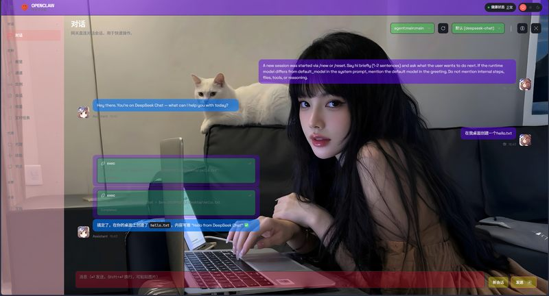

OpenClaw 前端界面定制工具 — 无需 CSS 知识，点点鼠标就能改主题
一个简单易用的 OpenClaw 界面定制工具。无需理解 CSS 语法，在图形界面中点击几下鼠标即可完成颜色修改。支持颜色选择器、10 种预设颜色、透明度滑块，还能修改背景图、AI 头像和用户头像。支持实时预览 CSS 修改效果，内置重置功能可一键恢复原始状态。
| 分类 | 可修改项 |
|---|---|
| 全局样式 | 背景图、顶部导航栏、侧边栏、全局卡片颜色 |
| AI 回复区 | AI 回复气泡、复制按钮（悬停）、AI 气泡（悬停）、文件操作框、工具卡片、工具卡片（悬停） |
| 用户区域 | 用户气泡、用户气泡（悬停）、用户头像、AI 头像 |
| 输入区域 | 输入区背景、输入框、操作按钮 |
node_modules\openclaw-cn\dist\control-ui\assets\index-*.css）效果截图（GitHub README 图片）
这个项目的起源挺有意思的。OpenClaw 是一个开源项目，我在用它的时候觉得默认主题不太好看，就去翻了它的 CSS 文件，发现里面有好几百行样式。手改太麻烦了，想着不如做个工具来改。
核心思路是用 Python 的 tkinter 写个 GUI 界面，然后用正则表达式解析 CSS 文件中的颜色值，提取出来展示在界面上。用户改完后，再把修改写回 CSS 文件。逻辑不算复杂，但把解析、展示、修改、预览、重置这一整套流程做顺畅了，还是挺有成就感的。
后来打包成了 EXE，方便不懂编程的用户也能用。项目在 GitHub 上收到了 3 个 star，虽然不多，但说明确实有人需要这个工具，哈哈。